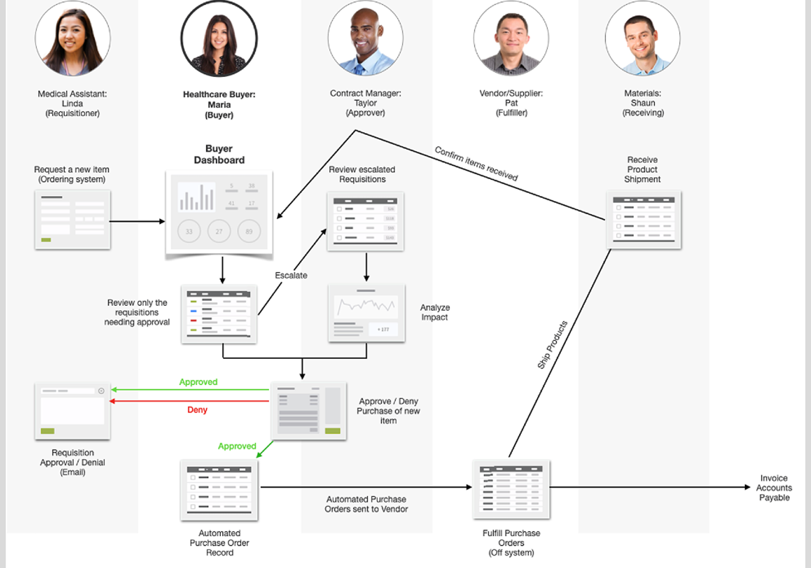
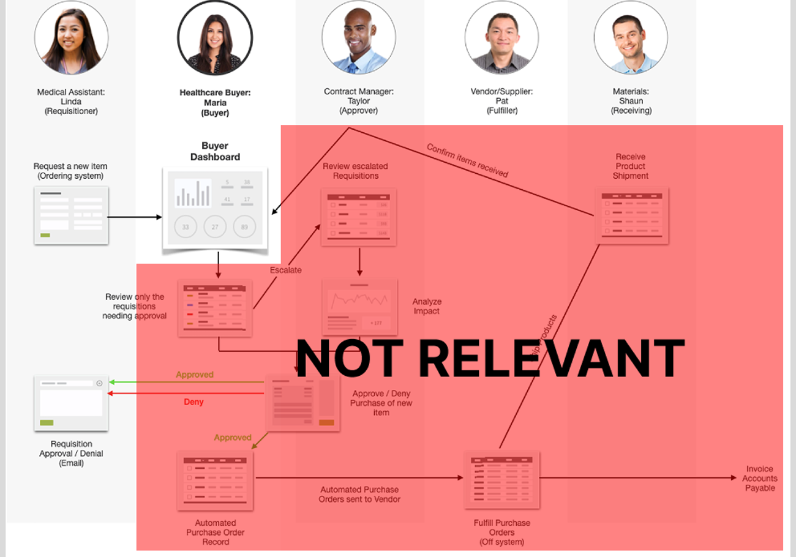
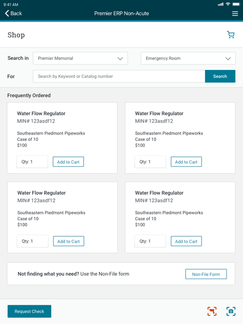
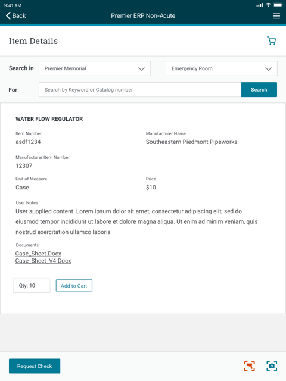
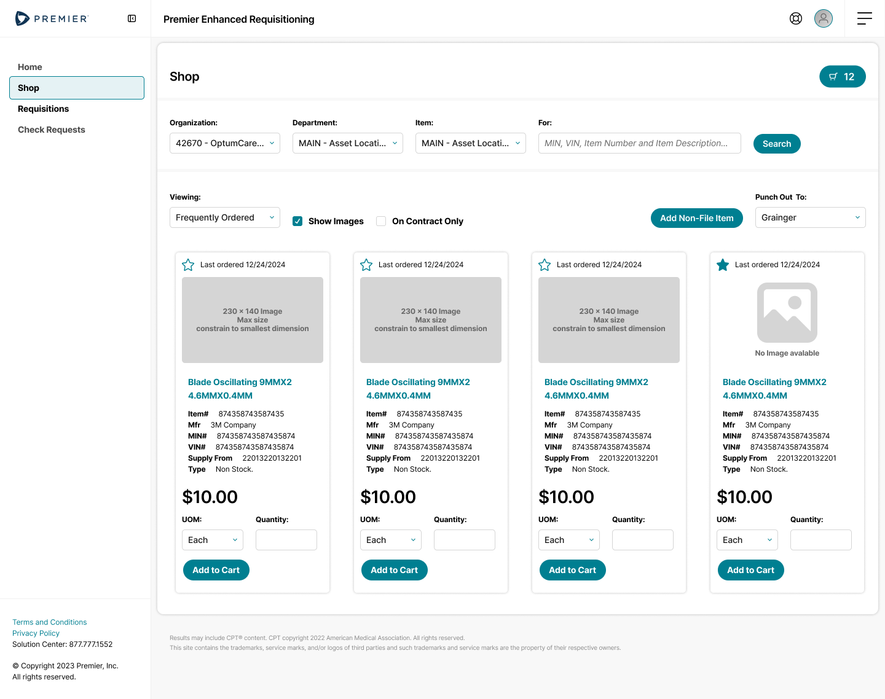

Making enterprise procurement feel consumer-friendly
How I transformed a complex ERP purchasing experience into an intuitive workflow for Acute Care staff — reducing ordering time by 45%, hitting an 89% satisfaction score, and influencing the future direction of Premier's ERP platform.
Enterprise ERP systems are built for procurement specialists — not the nurses, front desk coordinators, and clinic staff who occasionally need to order supplies.
Those occasional users were expected to navigate an interface designed around procurement processes, ERP terminology, and decades of accumulated functionality. The result was predictable: simple purchasing tasks became unnecessarily difficult.
Rather than redesigning the ERP itself, our opportunity was to rethink the experience entirely.
The challenge
Premier wanted to improve the purchasing experience for Acute Care organizations without replacing the Core ERP that powered inventory, purchasing, approvals, and business rules.
Constraint 01
The Core ERP remained the system of record. No business logic could change.
Constraint 02
Development resources were limited. Building a replacement ERP wasn't feasible.
Constraint 03
The solution had to support existing ERP integrations while dramatically improving usability.
How might we give occasional purchasers a consumer-grade ordering experience without changing the ERP that powers it?
My role
I led UX strategy from discovery through implementation — and beyond designing interfaces, I was responsible for helping the team reframe the problem itself.
Led discovery
Facilitated stakeholder interviews
Synthesized research
Defined UX principles
Created interaction models
Designed high-fidelity experiences
Presented design rationale
Supported sprint implementation
Research under real constraints
My preferred approach is always direct user research. Budget and timeline, though, prevented formal interviews with Acute Care customers during discovery.
Rather than guessing, I partnered with Premier's field consultants — who collectively represented decades of implementation experience across Acute Care organizations, and had observed hundreds of customer deployments and recurring support issues.
Instead of asking what features users wanted, we focused on understanding their daily workflow, the questions they asked most often, common mistakes, existing technology limitations, and where ERP complexity created unnecessary work.

01 — Mapping the full requisition-to-payment journey across every role it touched, before designing a single screen

02 — Scoping the redesign: marking off the buyer, approval, and fulfillment stages as out of scope so effort could concentrate entirely on the requester's experience
The turning point
Initially, our conversations centered on simplifying ERP screens. But after several interviews, a different pattern emerged.
Users weren't asking for a better ERP. They wanted to avoid interacting with the ERP altogether.
That insight fundamentally changed the direction of the project. Instead of redesigning ERP workflows, we designed a completely different experience powered by the existing ERP behind the scenes. Our strategy became: treat the ERP as infrastructure — not as the user experience. Everything that followed was guided by that principle.
Research insights
Six findings reshaped what we thought the product needed to be.
01
Insight — "Where is my stuff?"
Status was the top priority
Tracking order status was the single most important task. Users rarely asked about procurement workflows — they simply wanted confidence supplies were arriving when expected.
Design response
Status became the primary organizing principle of the application. Users saw the current state of every order immediately, without opening records.
02
Insight — "Is this the right product?"
Catalog numbers weren't how people thought
Ordering often began with an empty package or a handwritten note. Users struggled to identify products using ERP catalog numbers.
Design response
Prioritized recognition over recall — plain-language descriptions, intuitive search, and product context replaced internal ERP identifiers.
03
Insight
ERP assumptions didn't match reality
Traditional ERP systems assume users manage hundreds of requisitions. Acute Care users typically managed fewer than ten.
Design response
Replaced spreadsheet-style interfaces with lightweight task lists focused on active work, not historical data.
04
Insight
Ordering wasn't their job
Ordering supplies happened between checking patients in, scheduling appointments, and supporting clinicians. Every extra click interrupted higher-value work.
Design response
Every workflow was evaluated against one question: can someone complete this task in under a minute?
05
Insight
Less information, better decisions
Users consistently ignored large amounts of ERP data because it wasn't relevant to their immediate task.
Design response
Rather than exposing every available field, we progressively disclosed information only when users needed it.
06
Insight
The ERP couldn't change
Although users didn't need most ERP functionality, every workflow still depended on the ERP's purchasing rules and integrations.
Design response
Instead of exposing ERP complexity, we abstracted it behind APIs while preserving every underlying business rule.
Research → strategy
One insight completely reshaped the roadmap.
What we assumed
What research told us
Product decision
Users needed simpler ERP screens
Users wanted to avoid ERP concepts entirely
Build a presentation layer, not a redesign
Users needed more purchasing information
Users only wanted info relevant to the current task
Progressive disclosure
Users wanted familiar ERP workflows
Users wanted consumer-grade interactions
Design around user goals, not ERP modules
ERP terminology should stay consistent
Clinical terminology mattered more
Translate ERP language into user language
Design principles
Every decision throughout the project was evaluated against four principles.
01
Show only what users need
Every field had to justify its existence.
02
Prioritize recognition over recall
People shouldn't memorize ERP codes to complete simple tasks.
03
Surface status before actions
Users first wanted to know what was happening — only then did they want to take action.
04
Let the ERP manage complexity
Users should benefit from enterprise software without needing to understand it.
Solving the right problems
Ordering was redesigned around familiar shopping behaviors rather than ERP transactions — users searched naturally, confirmed products visually, and checked out with minimal interaction.
03 — Order Status Dashboard: every requisition grouped by what's actually happening with it, not by ERP record type

04 — Shopping, not requisitioning: plain-language names and visual cards replace ERP catalog browsing

05 — Recognition over recall: item detail surfaces exactly the context needed to confirm the right product
ERP Translation Layer — one of the less visible, but most impactful, design efforts involved translating ERP language into terminology familiar to Acute Care users. This reduced confusion while maintaining full compatibility with the Core ERP.
Progressive Disclosure — rather than removing ERP functionality, we concealed unnecessary complexity until users needed it, preserving enterprise capability while dramatically reducing cognitive load.

06 — Design system evolution: when Premier introduced new branding mid-development, the interaction patterns from ERP Plus carried forward and helped shape the broader system
Collaboration & design leadership
Engineering and SMEs understandably preferred interfaces that closely resembled the Core ERP — familiar, and technically predictable.
I facilitated design reviews grounded in research rather than personal preference. When discussions centered on exposing additional ERP fields or preserving legacy terminology, I used research findings to show how those decisions increased cognitive load without improving task success.
That shifted conversations from "How does the ERP work?" to "What is the user trying to accomplish?" — a shared perspective that significantly improved collaboration throughout implementation.
Business impact
ERP Plus demonstrated that simplifying enterprise software can improve both efficiency and satisfaction without sacrificing capability.
Outcome
Result
Ordering time
45% faster
User satisfaction
89%
Product reception
Strong adoption among Acute Care users
Organizational influence
Sparked a broader ERP modernization initiative
Perhaps the strongest validation came from users outside Acute Care, who requested the same simplified experience for their own workflows. What began as a targeted solution became the catalyst for a broader ERP modernization effort.
Reflection
This project fundamentally changed how I think about enterprise software.
When we began, I believed success meant making ERP systems easier to learn. Research challenged that assumption — users didn't want a better ERP, they wanted to accomplish their work without thinking about the ERP at all. That realization shifted my perspective from designing interfaces to designing mental models.
How can we remove the need for users to understand enterprise software in the first place?
Great enterprise UX exposes purpose, not power
The most successful design decisions reduced what users needed to think about, rather than what the system could do.
Constraints can improve design
Working within an immutable ERP forced innovation at the experience layer — a more elegant, maintainable solution than a wholesale redesign.
Research should change strategy, not just interfaces
The biggest success wasn't a redesigned screen — it was reframing the product itself, by treating the ERP as infrastructure instead of the interface.
Small patterns can shape big systems
Interaction patterns proven in a targeted project went on to inform Premier's broader design system and modernization roadmap.